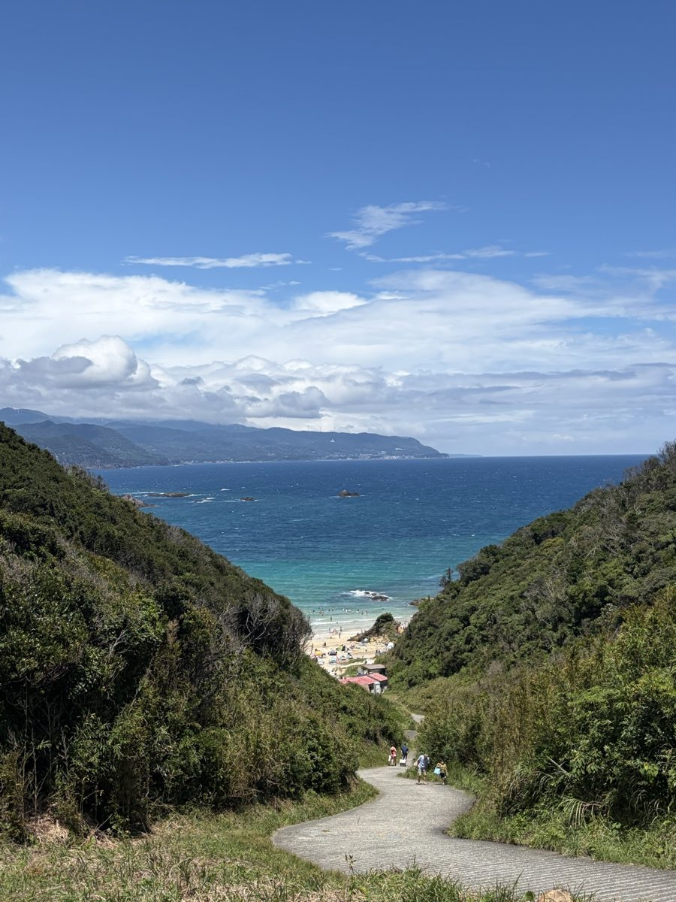
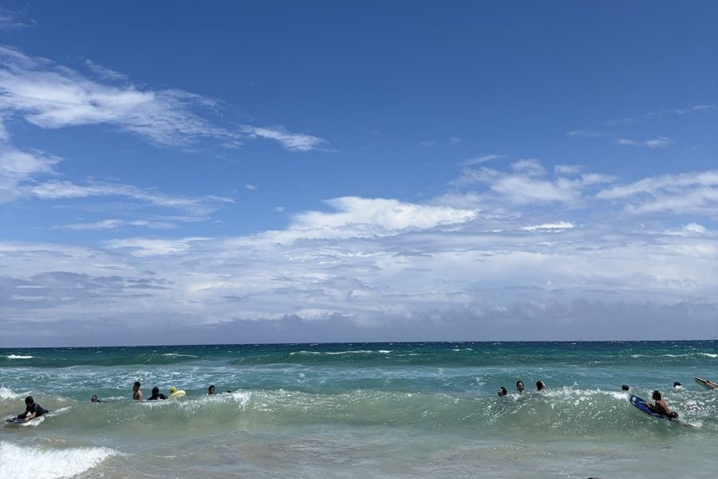
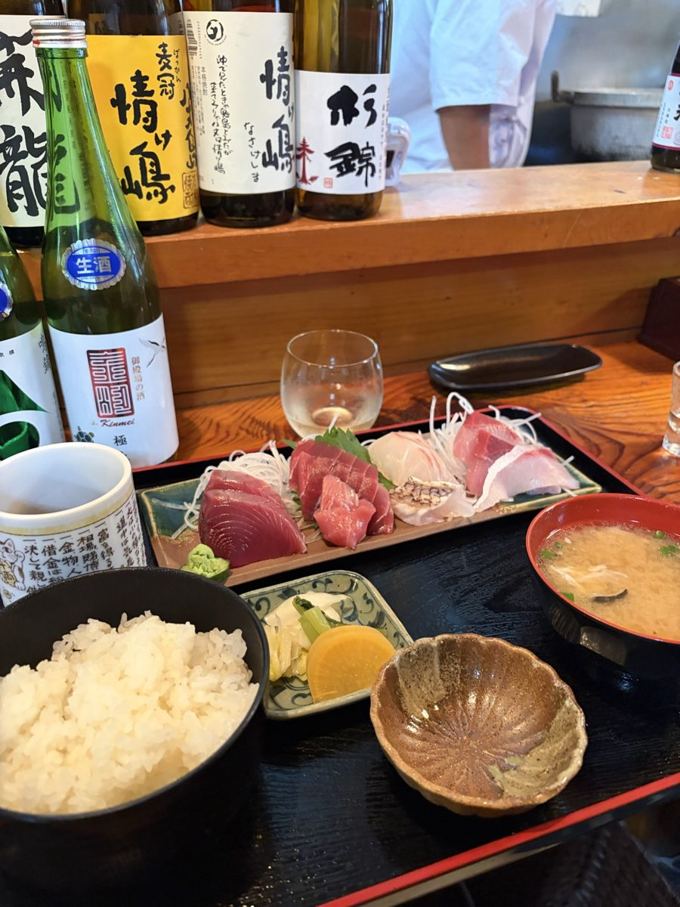
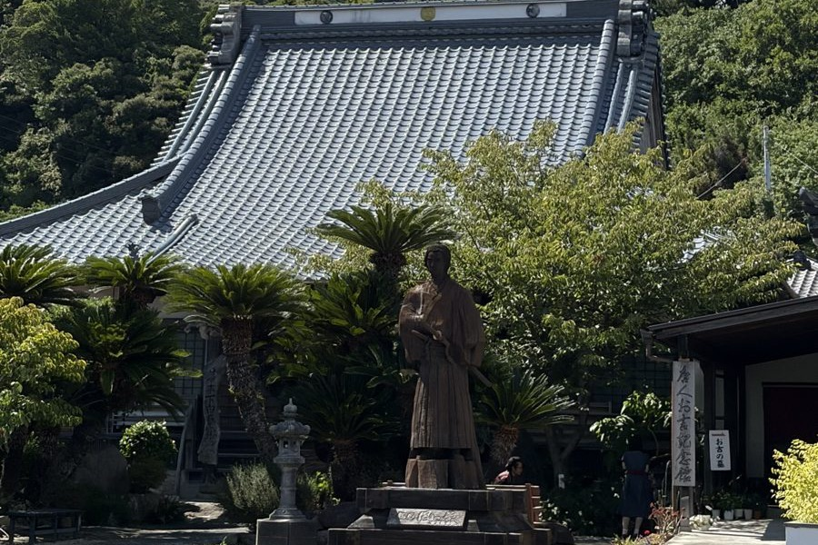

2026年8月13日、お盆の平日に、当社のエンジニアたちと伊豆下田へ行きました。海は澄んでいて、夜は流星群も見れて、入ったお店の刺身は都内で同じ値段では出てこないぐらい絶品でした。仕事の話も少ししながら、観音温泉にも行きました。最高の夏休みだったなぁ、というのが率直な感想です。
そのうえで、同じ種類の引っかかりに何度もぶつかりました。店も宿も駐車場も、行ってみるまで分からないということです。これは観光地の愚痴ではなく、うちが毎日話しているお客さんの話そのものだったので、記事にします。
資源は減っていない。客だけ減っている
まず数字で現在地を確かめます。静岡県が公表している「令和6年度 静岡県観光交流の動向」から、下田市の数字を引きます。
- 下田市の観光交流客数（令和6年度）: 2,028,794人（令和5年度は2,089,670人）
- うち宿泊客数: 913,718人（令和5年度は912,422人）
- うち日帰りにあたる観光レクリエーション客数: 1,115,076人（令和5年度は1,177,248人）
- 静岡県全体の観光交流客数（令和6年度）: 140,336,929人。前年度比100.5%で微増
県全体は前年度から増えています。その中で下田市は減っていて、減った分はほぼ日帰り客です（宿泊はほぼ横ばい、日帰りは約5.3%減。この差の計算は編集部によるものです）。同じ統計の平成17年度の下田市は3,507,890人でしたから、当時の6割弱まで来ています。
海はきれいなままでした。魚も、温泉も、黒船の歴史も、そこにあります。資源は減っていないのに、来る人だけが減っているという状態です。

探すのに苦労した3つのこと
引っかかったのは、次の3つです。どれも、贅沢な要求ではありません。
1つめは、店が今日やっているかどうか。個人でやっている店は、そもそも検索に出てくる情報が少なく、出てきても定休日や臨時休業が書かれていません。海の近くの店は、天気や仕入れで閉める判断が当日に出ます。昼どきに電話しても、忙しくて出ないのが普通です。結果として、開いている店に当たるまで車で回ることになります。
2つめは、宿の条件と空き。予約サイトに載っている宿は分かります。ただ、載っていない小さな旅館の空きと値段は、電話でしか分かりません。駐車場が何台あるか、素泊まりができるか、チェックインの締め切りが何時か、といった判断材料も、書かれている宿と書かれていない宿の差が大きいです。
3つめは、駐車場。これがいちばん分かりませんでした。料金がいくらか、いま空いているか、そもそも観光地の入口にどれだけ台数があるか。着いてみて初めて分かる、というのが基本でした。空いていなければ次を探して走ります。

駐車場が「行ってみないと分からない」のは、下田だけの話ではない
駐車場については、国が現状をまとめた資料があります。国土交通省 都市局街路交通施設課が令和7年5月に出した「自治体等と連携した駐車場データ活用事例集」です。
この事例集に載っているのは5例。岡崎市、東京都、金沢市、横浜市、京都府・滋賀県です。参考にできる先進事例が、全国で5つ挙げられる段階だということでもあります。そして5つとも、都市部や県庁所在地級の街です。
そのうち、いちばん整備が進んでいる東京都の s-park（東京都道路整備保全公社が運営）の記述がはっきりしています。掲載している約25,000件の駐車場のうち、満空情報があるのは約9,000件。残りは、載ってはいても空いているかどうかは分かりません。情報の取り方も、API連携のほか、事業者からの随時提供、そして委託業者による現地調査は年に1度と書かれています。
日本でいちばんデータが揃っている東京で、この状態です。観光地の駐車場が「行ってみないと分からない」のは、下田の怠慢ではありません。誰も整備していない領域が、まだそのまま残っているということです。
これは観光地の話ではなく、うちのお客さんの話
ここからが本題です。私たちが日々話している中小企業に、同じ構造がそのままあります。
これまでは、情報が置かれていなくても大きな損はしませんでした。人は地図アプリと勘で探し、電話をかけ、それでも見つけてくれたからです。ただ、出かける前にAIに聞いて予定を決める人が増えていくと、話が変わります。AIは、置かれていない情報を答えられません。営業時間が書かれていない店、料金が書かれていない駐車場、条件が書かれていない宿は、候補に入る前に落ちます。ここは編集部の見立てですが、方向はもう変わらないと思っています。
そして、これはAIを買う話ではありません。まず費用がほとんどかからない3つがあります。
- 今日やっているかを書く。営業時間、定休日、臨時休業。地図アプリの情報を最新にするだけで、探している人の第一関門を通せます。
- 値段と条件を文字で書く。写真の中の文字や、画像1枚だけのお知らせは、機械には読めません。テキストで書きます。
- 駐車場のことを書く。台数、料金、混みやすい時間帯。「近隣にコインパーキングあり」の1行でも、行くかどうかの判断は変わります。
そのうえで、それでも取りこぼすのが電話に出られない時間の問い合わせです。昼の営業中、仕込み中、繁忙期。ここは人を増やさずに埋められる部分で、うちがAIエージェントや社内マニュアルAIで実際に引き受けている仕事も、派手な自動化ではなく、この地味な取りこぼしの回収です。

下田が力を失ったとは思いません。当たった店の満足度は都内より高かったし、人が少ないぶん、海も道も静かでした。ただ、当たるまでに使った時間の分だけ、次に来ない人が出ます。減った日帰り客の中には、探すのを面倒がってやめた人が、いくらか含まれているはずです。
代表・佐藤徳之介はこう話します。「行ってよかったし、エンジニアと羽を伸ばせました。だからこそ、探すのに使った時間がもったいなかった。うちが売っているのは新しい魅力をつくる道具ではなくて、すでにある魅力にたどり着くまでの時間を削る道具です。観光地でも、町工場でも、やることは同じでした」
楽ではなく、楽しいを考える。私たちがそう言っているのは、まさにこの部分です。店を探して車で回った時間は、楽しくありません。魅力にたどり着いたあとの時間だけが、楽しい時間でした。
「資源があっても、情報が置かれていなければ選ばれない。逆に言えば、情報を置くだけで戻ってくる客がいる。」
出典
- 静岡県スポーツ・文化観光部観光政策課「令和6年度 静岡県観光交流の動向」（下田市および静岡県全体の観光交流客数・宿泊客数・観光レクリエーション客数は同資料の市町別統計より）
pref.shizuoka.jp（令和6年度 静岡県観光交流の動向 PDF） - 国土交通省 都市局街路交通施設課「自治体等と連携した駐車場データ活用事例集」（令和7年5月。掲載5事例、および東京都 s-park の約25,000件中約9,000件に満空情報あり・現地調査は年1度の記述は同資料より）
mlit.go.jp（事例集 PDF） ／ mlit.go.jp（駐車場におけるデジタル技術の活用）
※ 前年度からの増減率、平成17年度との比較はAIdollargame編集部による計算です。それ以外の数値は出典元の公表値をそのまま引用しています。将来の見通しに関する記述は「編集部の見立て」と明記しています。写真は2026年8月13日に編集部が伊豆下田で撮影したものです。特定の店舗・施設についての評価は含みません。
「うちの情報は、AIに答えられる状態か」
営業時間、料金、条件、問い合わせ対応。取りこぼしがどこにあるかは、3分の無料AI活用度診断でおおよそ見えます。電話に出られない時間の対応から始めたい方はAIエージェントへ。
3分でAI診断する →